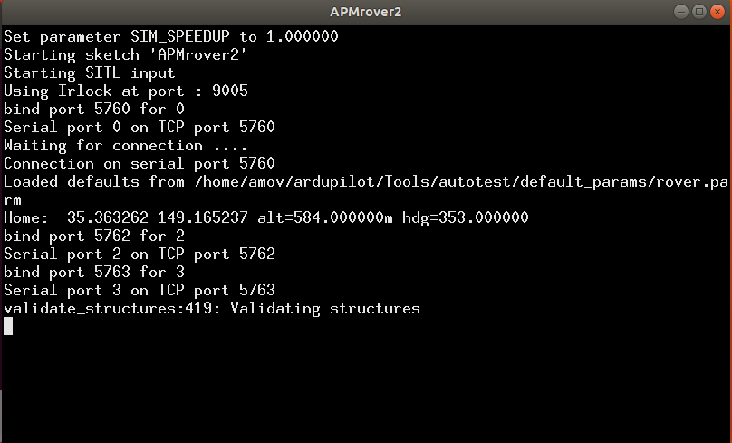
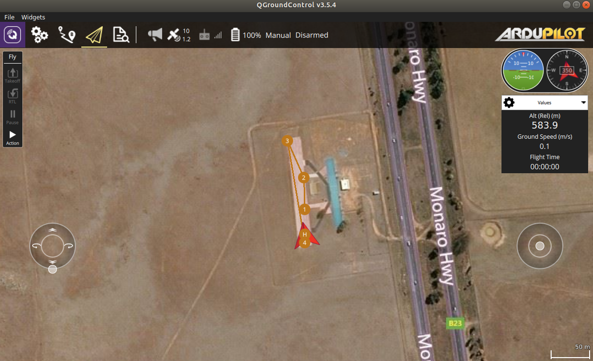

仿真系统软件介绍及其初步使用¶
1.1 软件安装¶
安装好的系统，没有浏览器,在使用之前可以安装好浏览器：”wget https://dl.google.com/linux/direct/google-chrome-stable_current_amd64.deb”, 然后安装”sudo dpkg -i google-chrome-stable_current_amd64.deb “。如果下载失败先”sudo apt-get uppdate”,我们提供的百度网盘里面同时提供这些安装工具包。 在home目录下解压gazebo_models.zip。安装好VScode。安装一些常用的软件。一般都是下载deb软件包，然后采用”sudo dpkg -i” 命令安装软件。 系统的环境更新可以按照我们之前给PX4无人机的环境，这个环境里面Gazebo环境是好的，我们在这个环境基础上构建无人车的开发环境和源码。
1.2 代码更新和环境设置¶
提供的代码例子包含控制接口，激光雷达避障等，Mavros节点的无人车应用开发。项目地址为：http://gitea.amovlab.com/PrivateForAmovlab/ArduCar.git 提供的无人机仿真开发历程代码在github上，在使用之前先到远程库里面更新下代码，操作如下：
git clone http://gitea.amovlab.com/PrivateForAmovlab/ArduCar.git
如果下载不成功请到论坛发帖求助或者联系我们。
以下的环境代码配置在我们提供的ISO镜像基上首先确保可以正常安装使用了，在进行如下操作，具体教程请看https://bbs.amovlab.com/plugin.php?id=zhanmishu_video:video&mod=video&cid=18 这个无人机仿真教程的免费章节，如果上面链接失效，可以在我们铂贝学院里面找到。我们同时也会在文档资料里面提供。
- 打开~/ArduCar 源码目录，如果自己安装就去上述地址下载源码。
- catkin_make (ROS空间的常用编译命令,如果购买我们的硬件，我们是随机安装调试正常的)
- 编译完成目前的代码
- 拷贝ardupilot源码压缩文件到home目录,具体操作请看tar.gz 文件如何解压
- 把我们提供的.bashrc 文件替换有的.bashrc文件home目录按Ctrl+H ，显示隐藏文件就可以看到设置系统环境的文件.bashrc文件，然后替换掉，确保环境变量统一。
- git clone https://github.com/khancyr/ardupilot_gazebo
- cd ardupilot_gazebo
- mkdir build
- cd build
- cmake ..
- make -j4
- sudo make install
- 在源码里面设置为编译软件仿真 ，在ardupilot目录 ./waf configure –board sitl
- ./waf rover
- 安装MavProxy库：sudo pip2 install -U MavProxy
- 安装pymavlink库：sudo pip2 install -U pymavlink
- 仿真环境搭建可以参考Ardupilot：https://ardupilot.org/dev/docs/using-gazebo-simulator-with-sitl.html
以上的安装因为网络原因不能保证可以正常安装，如果安装失败可以咨询我们，我们提供硬盘直接拷贝的服务，把系统直接拷贝到M2的硬盘中，客户拿到拷贝好的硬盘，插在系统M2的硬盘口上就可以直接进入系统运行 免去系统安装的繁琐，或者直接采购我们的板载计算机也可以直接使用。
硬盘链接如下：

1.4 启动开发环境¶
X86的机载计算机上提供一套完整的开发环境，我们用的ardupilot固件进行无人车的开发，ardupilot提供一套完整的无人车底层控制仿真代码，可以在ROS/Gazebo上运行。在系统用户目录的 ardupilot/Tools/autotest/sim_vehicle.py，这个文件就是启动了在PC中运行的一套无人车底层控制系统，这套控制系统中包含了完整的导航滤波，状态估计，PID控制算法。但是不包含视觉环境感知 和高级路径规划的模块。这些模块在机载电脑ROS里面完成。 - 启动软件仿真模块 在~/ardupilot/Tools/autotest/路径中的sim_vehicle.py启动命令如下：
- ./sim_vehicle.py -v APMrover2
运行一段python的代码，启动Ardupilot固件的无人车仿真程序

在打印消息中已经有了系统信息和初始化完成信息。
这个端口显示一些仿真的消息。
打开已经安装好的QGC地面站可以看到，无人车系统已经可以正常通过Mavlink消息链接。说明仿真的ardupilot无人车系统已经启动成功。
可以像操作真实无人车那样给无人车规划航点，控制无人车的运行，即便没有真实的无人车设备也可以在电脑上操作开发无人车系统。开发完成之后的代码可以切换到真实的设备上，一样效果运行。
1.5 无人车地面站规划模拟航线运行¶
首先安装QGC地面站，在我们提供的工具包里面有。
- sudo usermod -a -G dialout $USER
- sudo apt-get remove modemmanager -y
- sudo apt install gstreamer1.0-plugins-bad gstreamer1.0-libav -y
- chmod +x ./QGroundControl.AppImage
- ./QGroundControl.AppImage (or double click)

运行成功
1.6 GUIDE模式自动驾驶¶
用python给出了，该小车的位置控制Demo和速度控制Demo，这个pyton接口可以适配大部分路径规划的应用。大部分路径规划算法，最终收敛都是给无人车的执行机构发送期望的速度或者期望的位置。 在仿真中：
- 启动Ardupilot仿真模块 在~/ardupilot/Tools/autotest/路径中的sim_vehicle.py启动命令如下：./sim_vehicle.py -v APMrover2
- 新打开一个终端启动Mavros模块,Gazebo仿真模块：roslaunch simulation rover_apm.launch
- 在Tools文件夹里面打开QGC地面站
- 在~/ArduCarROS/src/simulation/scripts/目录中可以看到给无人车用的两条命令AutoCarapm_location.py和AutoCarapm_vel.py,一个是给无人车发送期望的位置接口，一个是个无人车发送期望的速度接口。